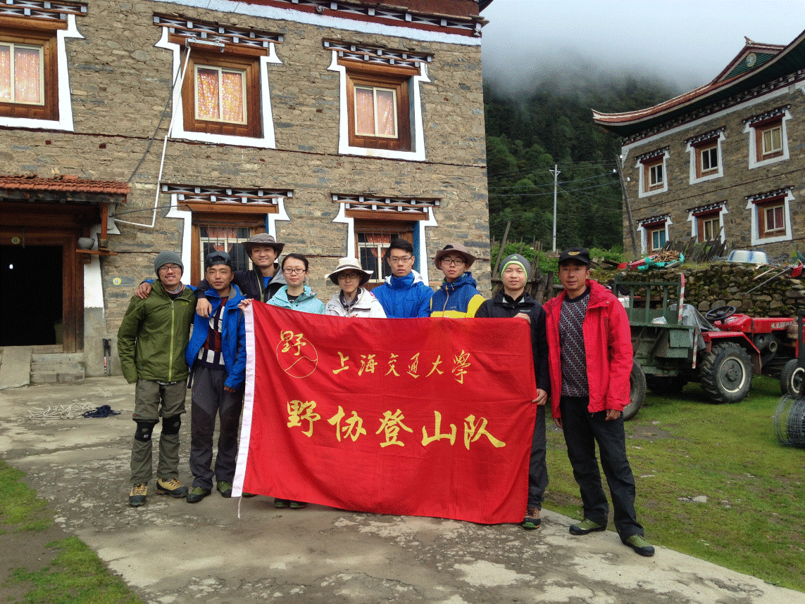

发信人: crazycams(嗡嗡嗡), 信区: outdoor
标 题: 2016那玛峰攀登队长职务总结——zcw
发信站: 饮水思源 (2016年12月16日01:15:29 星期五)
攀登队长——职务总结
又一年以攀登队长的身份加入登山队，和去年半脊峰攀登之前的准备工作比起来顺利多了
，毕竟经历过去年那一波三折的选山之后，对学生队伍的攀登准备工作算是心里有数了。
在4月的选山讨论中，对比了川西同海拔等级的雪宝顶、雪隆包等山峰，权衡攀登难度、季
节情况和尽可能保证登顶成功率等因素之后，选中了相对较为容易攀登的贡嘎山的卫峰—
—那玛峰。既保证了在夏季有相当长度的雪线攀登经历，同时难度也比较适合队伍的整体
水平，老队员可以有一定机会全程修路，而且那玛峰的地形也较为丰富，冰川，雪坡，碎
石，基本涵盖了雪山攀登的地形，新队员的攀登体验也能得到保证。
1. 山峰简介：
那玛峰位于康定县境内，为贡嘎山卫峰之一，海拔5588米，为典型的初级技术型雪山。山
顶部分为一巨大的远古冰帽覆盖。攀登难度不大，为冰川裂缝及冰雪坡攀登，天气良好的
情况下，可由冰舌末端大本营一天登顶。山峰景色极佳，可以清楚看见整个贡嘎西北山脊
和主峰。
参考之前已有的攀登资料，在出发前我做了如下的攀登计划：
1.1 登山线路：
1. 上子梅村-贡嘎寺-那玛峰BC（4200m），BC位于贡嘎寺水电站后河谷尽头。
2. BC-传统C1（4900m），主要为高山草甸，碎石坡地形。
3. C1-顶峰（5583m）正常修路约150米，翻上垭口后结组行进。
screen.width - 200){this.width = screen.width - 200}">
screen.width - 200){this.width = screen.width - 200}">
1.2. 行程安排：
7月27日 成都-康定 宿：康定
7月28日 康定-上子梅村 宿：上子梅村
7月29日 上子梅村-贡嘎寺-BC 宿：BC 中 晚
7月30日 BC修整，训练 宿：BC 早 中 晚
7月31日 BC-C1运输物资，观察路线 宿：修路队C1，其余队员BC 早 中 晚
8月1日 修路队C1修路，全员抵达C1 宿：C1 早 中 晚
8月2日 冲顶，下撤至BC 宿：BC 早 中 晚
8月3日 BC-上子梅村-康定 宿：康定 早
8月4日 康定-成都
以上时间可留机动时间一天 机动两天 早2 中2 晚2
共早7 中7 晚7
早饭上子梅村1 午饭上子梅村1 晚饭康定1
1.3. 时间节点安排：
成都-康定： 早上8：00出发，班车约7小时
康定-上子梅村： 上午8：00出发
上子梅村-BC： 徒步约6-7小时，顺便适应海拔，海拔从3200m-4200米
BC-C1: 约5小时，海拔从4200m-4900m
C1-冲顶： 视雪况而定，若雪况不好，会选择在凌晨3点左右出发。登顶关门时间暂定为
中午12:00，具体关门时间视当时情况而定，海拔从4900-5588m
峰顶-BC： 约13小时
2. 进山：
那玛峰的接近性相对较差，从成都出发，要经历两天坐车，一天徒步才能到达大本营，当
然之前也有队伍两天抵达大本营，但对我们这种有较多物资的队伍来说，进山时间无需太
赶，而且三天的进山时间也有利于队员适应高原环境，降低高反的几率。但在出发前，攀
登副队长文颖突然得了肺炎，考虑到她的身体情况，我们决定推迟进山时间。7月25日除文
颖外的其余队员先行出发去成都，文颖则在上海继续治疗，若三天后痊愈则她再到成都和
队伍汇合，否则只能她只能放弃这次攀登。7月26日，7人队伍抵达成都后在成都修整，同
时采购物资和办理车票改签手续。吃吃喝喝过了三天，虽然非常遗憾西瓜的病情并没有痊
愈，但是她仍然抵达成都和大家汇合，感动得不要不的\(≧▽≦)/。
29号8点坐新南门客运站到康定的大巴，在康定和徐老幺山峰户外的两位教练汇合后住宿一
晚，30号早上9点从康定包车前往上子梅村。上子梅村的海拔约3400米，晚上在藏家客栈休
息时三名队员有轻微的高反症状，可能和刚到村子时太兴奋有关。
 screen.width - 200){this.width = screen.width - 200}">
上子梅村藏家客栈
31号从上子梅村徒步到海拔4200米的大本营，全程耗时8小时左右，租用了两匹马托运沉重
的技术装备和部分食物。路况整体不错，主要以较缓的土坡、草甸为主，需要注意的是途
经古贡嘎寺（海拔3700米）后需下降到河滩处过河再翻上碎石坡才能继续。过河的地方随
季节不同难度也不同，夏季尤其是雨季后，水势可能较大，两根圆木组成的桥极有可能被
淹没。好在这次水势不算大，但因为飞溅的河水使得木头异常湿滑，要胆大、心细、慢慢
通过。
全队抵达BC后，迅速搭建营地。在和教练、队长商量后决定，明早根据队员的体力和高反
情况决定是直接上C1营地还是在BC再休整一天。
screen.width - 200){this.width = screen.width - 200}">
screen.width - 200){this.width = screen.width - 200}">
途经贡嘎寺

需要注意的过河点
3. 攀登过程：
8月1日：
早上发现所有队员状态还不错，按照计划，在BC藏好多余的食物和装备后，全队前往C1营
地。从BC（4200米）达到C1（4800米）大约用了4个小时。由于中途经历中雨和冰雹，在抵
达C1后将淋湿的装备和衣物掏出来晾晒。3点30分左右在C1附近的小山坡上进行了上升下降
，过节点的训练。训练结束后，趁着光线还不错，赶紧和教练讨论明天冲顶的路线，初步
计划是走中间冰川直上，坡度不是很大，但是大队伍仍需要修路。于是带2捆50米路绳，
2捆50米结组绳。再查看队员状态，发现徐瑾卿的状态不佳，和队长、教练协商后制定了两
个计划：A.明早出发时如果状态继续如此，则她不上；B.如果出发时状态还行，但到了冰
川末端状态不行，则又一名教练带她下撤，其余队员和一名教练继续冲顶。考虑到第二天
要爬升800米并撤回BC，加上翻上冰川后那玛峰那漫长的雪坡，于是计划凌晨3点半出发，
10点半为冲顶的关门时间。修路队携带6根冰洞绳，3个冰洞钩，2根雪锥，5根冰锥以及保
护站和路上用的主锁。
screen.width - 200){this.width = screen.width - 200}">
screen.width - 200){this.width = screen.width - 200}">
screen.width - 200){this.width = screen.width - 200}">
C1进行技术训练
8月2日：
凌晨两点半起床，在吸取了去年半脊峰早饭没有吃够的教训后，所有队员都尽可能多吃一
点，但可能由于土豆泥在高原显得有点腻，有两个队员仍然没怎么进食，去年的问题似乎
又发生了，这给下撤也带来了一些麻烦，当然，这是后话了。
3点40分左右，全队出发，徐瑾卿的状态似乎恢复了，于是A计划也就不用执行了。修路队
由状态较好的周致民、何敏、我以及教练强哥组成，再加上状态不错的庞博，五个人在队
伍前方走得较快，剩下的队员由教练小牦牛在后方带领。从C1出发不就便是漫长的碎石坡
，天黑的情况下，不熟悉路的话很容易走错，好在强哥多次攀登过那玛，这一段碎石坡没
有走错方向。大约凌晨5点半的，修路队抵达冰川末端，然后一边整理装备一边等待后面的
队员。冰川的雪并没想象中那么厚，估计有30-40厘米深，雪锥必然是不能用了，这样正好
用冰锥做保护点，也更加稳固。第一段50米由何敏领攀，第二段50米是我领攀，到了第二
段保护站时发现到冰川顶端仍有20多米的距离，于是周致民用一根结组绳作为路绳领攀到
了冰川顶端。翻上冰川，全队分两队结组，并约定用20步一休息的节奏前进，尽管顶峰看
起来就在不远的地方，但这个的雪坡仍比想象中要漫长。10点30分，我和强哥登顶，其他
队员陆续到达，顶峰有信号，大家也就拿出手机开始保平安。由于在登顶时天气骤然变坏
，开始下小雪和冰雹，在顶峰逗留半小时，拍完合照和赞助照后就赶紧下撤了。
下撤时，徐瑾卿和孙瑞田的状态十分不好，两人似乎有些体力透支和高反，无奈只能让他
们服用西地那非，然后周致民和小牦牛用绳子将他们拖下雪坡。冰川下降时，我和强哥先
下并分别在两个保护站等待检查下降操作是否有问题，周致民在冰川顶端的保护站检查，
小牦牛和何敏在最后收绳。有惊无险，全队在下午3点30分下撤C1，经过一个小时的修整后
，4点30分从C1拔营往BC下撤，7点左右，全队安全撤回BC。
screen.width - 200){this.width = screen.width - 200}">
screen.width - 200){this.width = screen.width - 200}">
screen.width - 200){this.width = screen.width - 200}">
顶峰是有信号的！
screen.width - 200){this.width = screen.width - 200}">
4. 最后想说的
每年登山结束后都会暴露出一些问题，从今年那玛峰的攀登情况来看，技术上并没有什么
问题，大家在前期的训练中也十分认真和刻苦，这一点在山上也得到了印证。但是从攀登
的意识上仍然不够到位，出现了装备遗失（下撤时遗失大冰镐一只），没有提前避免生理
周期、不吃早饭以及队员户外经验太少等一系列问题，这些潜在的但是容易被忽视的问题
在山上会因为环境和自身的因素而被放大，有可能会对整个队伍的安全造成影响，希望以
后的登山队在训练中要有针对性地强调这些问题，不能抱有侥幸心理。总的来说，这次那
玛峰的攀登有惊无险，但也是自协会恢复夏季登山活动以来首次全队登顶（除开西瓜因生
病未能山上），理应值得高兴，但是对于准备和攀登过程暴露的问题也要加以重视，毕竟
在山上任何一个小的失误和侥幸都有可能引起比较严重的后果。
最后还是附上这次攀登的航迹：
screen.width - 200){this.width = screen.width - 200}">
上子梅村-BC
screen.width - 200){this.width = screen.width - 200}">
BC-C1-Summit
--
其实攀岩就是一种生活，或近或远，或难或易，爱者自爱，无关名利你我
※ 来源:·饮水思源 bbs.sjtu.edu.cn·[FROM: 45.32.62.195]
※ 修改:·crazycams 于 2016年12月16日01:16:14 修改本文·[FROM: 45.32.62.195]
|